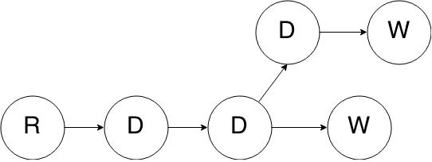
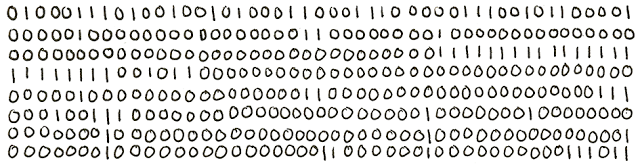
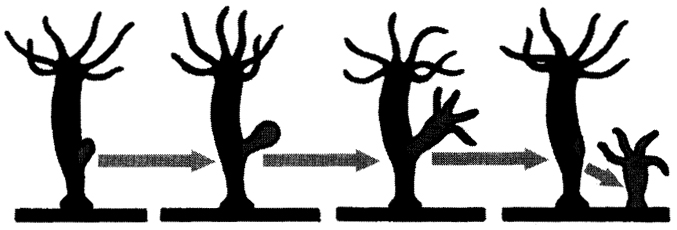

Advanced Node Topics
Express.js quiz
DiscussionContents
- Part 1. Event Emitters
- Part 2. Streams
- Part 3. Buffers
- Part 4. socket.io
- Part 5. Child Process
- Part 6. Cluster
Part 1. EventEmitters
Stability: 4 - API Frozen
Emits events
Many objects in Node emit events.
process.on('uncaughtException', function(err) { //Uncaught exception
process.on('SIGHUP', function() { //Terminal closed
file.on('error', function (data) {
smth.on('data', ...
And many others like this:
Main methods
- .on (.addListener) - adds listener
- .once - listener fires only once
- .emit - emits event, passes data
- .removeListener, .removeAllListeners
Creating owr own
var EventEmitter = require('events').EventEmitter;
var Radio = function (station) {
EventEmitter.call(this);
var self = this;
//IMPORTANT. Not on the same tick.
setTimeout(function () {
self.emit('open', {station: station});
}, 0);
};
// extend the EventEmitter
util.inherits(Radio, EventEmitter);
Let's do it quick
Events
- self.on('newListener', ..
- self.on('removeListener', ..
Avoiding memory leaks
Memory leak detection
By default you'll get warning on 11th listener.
You can change this restriction .setMaxListeners(0)
Error
If error happens, emitter emits 'error' event.
If there is no listener throws error.
Example 2.2Promisifying EventEmitters
Why not to do this
var defer = Promise.defer();
emitter.once('someEvent', function (data) {
defer.resolve(data);
});
emitter.on('error', function (err) {
defer.reject(err);
});
return defer.promise;
Part 2. Streams
Like .Net Stream class
Similar to linux console ls | grep etc.
General info
Well known streams: request, response, stdout, files etc
- Can be Readable, Writable, Transform
- Stream are EventEmitters
- You can chain them
Readable streams
The Readable stream represents a source of data that you are reading from.
var readStream = fs.createReadStream('file.txt');
Data comes out of a Readable stream.
Modes
- Flowing
- Paused (Default)
Let's see example 3.
Ways to start flowing
- .on('data') implicityly starts flowing
- .pipe(writableStream) implicityly starts flowing
- .resume() explicit way. Note: no 'data' listeners - data will be lost.
Ways to pause
- .pause()
- remove all 'data' handlers, .unpipe() all pipes.
Removing 'data' handlers will not pause the stream.
If you .pause() but not .unpipe(). Destination will cause resuming as it drains.
Alternative way to .read()
var readableStream = fs.createReadStream('lorem.txt');
readableStream.on('readable', function () {
var chunk;
//Pass how much to read. If null - wait for 'readable' event.
while (null !== (chunk = readableStream.read(30))) {
console.log('Was read: %d bytes', chunk.length);
}
});
Writable streams
The Writable stream interface is an abstraction for a destination that you are writing data to.
Where: response, files, stdout etc.
.write() and .on('drain')
If writableStream.write(chunk) returns false, it's recommended to wait until 'drain' event because system has to buffer data.
This is difficult. Pipe()'ing handles pressure implicitly. Not to pause/resume manually.
.on('finish')
Calling .end(chunk) emmits 'finish' events. Further .writes will cause errors.
Time for example 5.
Transform streams (Duplex)
Are both readable and writable
Examples: zip stream, crypto stream.
Real stream power
Example 6
Create your own streams
The guide waits for you.the book
Is here.
Part 3. Buffers
Relax, just binary data.
What's it
In pure js there is no way to process binary data. (file, TCP)
First Node.js used binary strings. Bug it's slow.
So Buffers were created.
Buffers are instances of the Buffer class.
Act like fixed size array of ints 0 to 255.
Methods
- new Buffer(size || array || string ..)
- buf[i]
- buf.length
- .read()'s of any kind
- .writes()'s of any kind
- .concat()
- .slice()
- .compare()
Part 5. Child Process
A way to execute something in parallel process.
Child process object has
- .pid
- Streams: stdin, stdout, stderr
- .send() *for .forked only
- Events: error, exit, close
- .kill(signal)
Ways to create child process
- child_process.spawn - universal, stdout, stdin, stderr are streams
- .exec - buffers those streams
- .execFile - same, executes file
- .fork - Node.js process. Allows to .send(messages)
- ++ sync analogs
spawn
Universal. Starts something by console command. Gives you streams to handle results.
Streams are configurable. See the doc.
Example 7 goes here
exec if you don't like streams
var exec = require('child_process').exec;
//Not needed on linux
var windowsPrefix = process.env.comspec + ' /c ';
child = exec(windowsPrefix + 'ipconfig', function (err, stdout, stderr) {
if (err) { throw err; }
console.log('stdout: ' + stdout);
console.log('stderr: ' + stderr);
});
This simple.
Fork
Creates node.js process with easy communication.
//master.js
var slave = cp.fork('./slave');
slave.send(anyData);
slave.on('message', function(dataFromSlave) {
});
//slave.js
process.on('message', function (dataFromMaster) {
});
process.send(dataToMaster);
gist
Heavy computing should be performed in separate processes.
Part 6. Cluster
On top of this debauchery.
Note: Stability: 2 - Unstable
What's it
- Built-in load balancer to take advantage of multi-core systems.
- Creates multiple processes -> servers, shares requests between.
- All resources are shared.
Production ready alternatives
- PM2 7,5k stars at GitHub
- Deploy env tools (say Heroku has dynos).
Part 4. socket.io
Yes, finally

What is it?
Duplex communication between client and server
(Not only the client calls server. Server can ping client.)
What for?
- Chats
- vk.com
- Online games
- Real time analytics
No need to send ajax calls each ... seconds.
how it works
Independent protocol over TCP, no connection with HTTP
browser support
All browsers are supported
- WebSocket protocol
- Adobe flash sockets
- JSONP Polling
- AJAX Polling
How to use
npm i socket.io
server
var app = require('express')();
var server = require('http').Server(app);
var io = require('socket.io')(server);
server.listen(80);
io.on('connection', function (socket) {
socket.emit('news', { hello: 'world' });
socket.on('my other event', function (data) {
console.log(data);
});
});
client
var socket = io.connect('http://localhost');
socket.on('news', function (data) {
console.log(data);
socket.emit('my other event', { my: 'data' });
});
Main methods
- .emit('eventName', data)
- .on('eventName', handler)
additional features
- namespaces
- rooms
- acknowledgements
- much else
Example 11